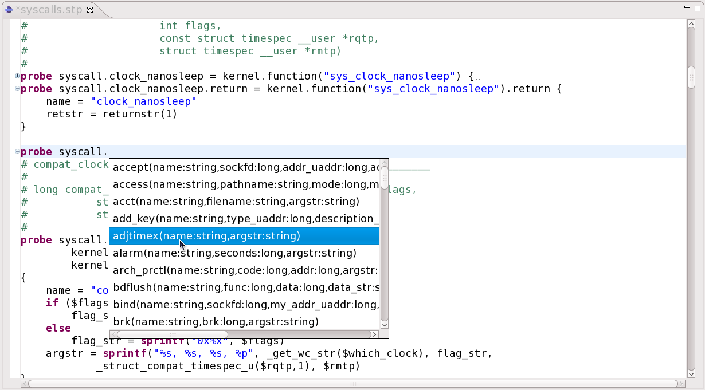

Linux Tools - System Tap Plug-in
Overview
The Linux Tools SystemTap editor plugin adds SystemTap script editing support to Eclipse. The editor includes completion, syntax highlighting, partition support and code folding.
Current Status
In conjunction with Eclipse SDK, the plugin supports:
- Coding folding of probe points
- Completion suggestions of probe points
- Syntax Highlighting
Future Plans
- Improved code folding to fold comment and functions
- Script error detection
- Expansion of completion to include functions, and built-in updates as System Tap updates
Screenshots
SystemTap editor sample

Try it out
Please use our update site as described
here.
You can also check the project plugins out of Git
directly from github at https://github.com/eclipse-linuxtools/org.eclipse.linuxtools.git.
You will need to check out the following from systemtap subfolder:
org.eclipse.linuxtools.systemtap.feature
org.eclipes.linuxtools.systemtap.ui.editor
From there, run the plugins as an Eclipse Application.